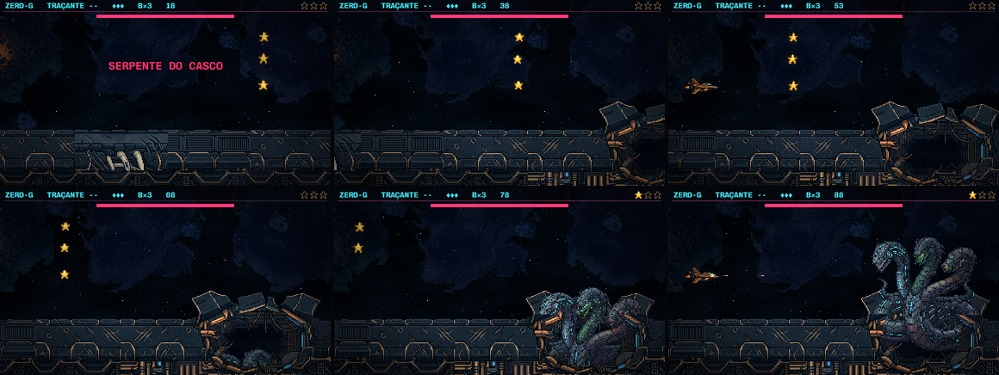
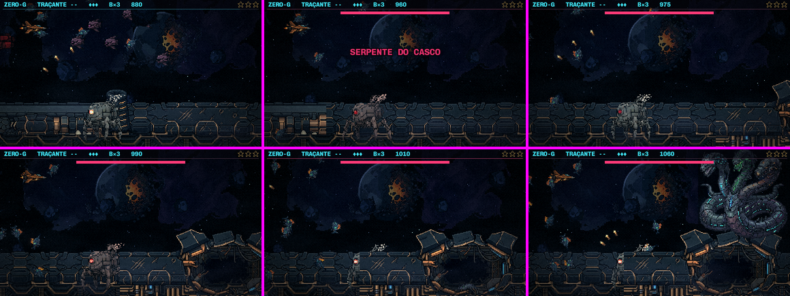
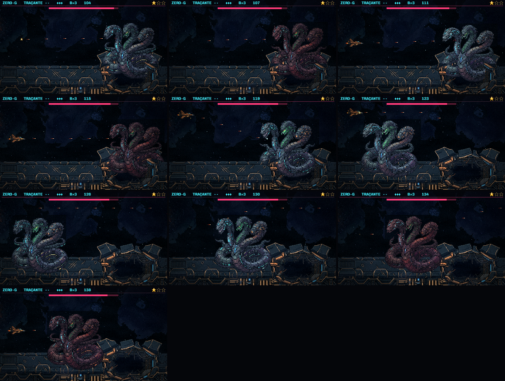
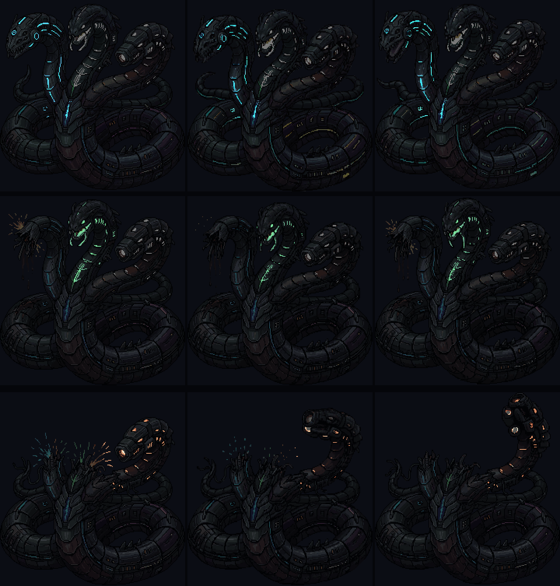
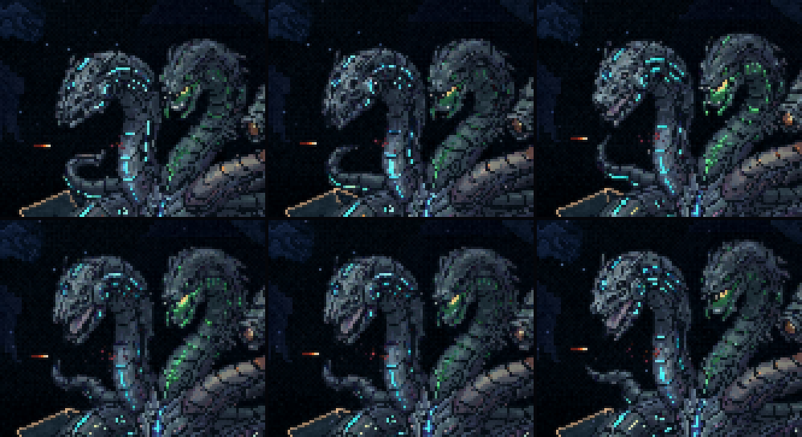

A luta da Serpente (S1)
28/10/2026 · spec docs/superpowers/specs/2026-10-28-serpente-luta-s1-design.md · plano docs/superpowers/plans/2026-10-28-serpente-luta-s1.md · ← os conceitos do rombo. Nada foi commitado.
Você: "ela está muito central, sobrando pouco espaço para o player … a estrela não me agrada muito … a avançada dela para frente não está fazendo muito sentido … É um dos bosses mais fáceis"; "muito engessadas"; "o cenário do boss não condiz com a fase".
O que entrou no jogo:
- A arena: na chegada do chefão o casco do Leviatã freia e para, com o rombo A no posto dela, e ela sobe de dentro dele. As placas soltas saíram. O treino
[N]mostra o mesmo casco, já na proa. - A posição: ela vive no terço direito, no rombo (centro em x ~300; antes 252), e troca entre três alturas: afundada, média e erguida. Sobe antes de atacar e afunda para se recuperar.
- A investida, em toda forma: ela mira a altura da nave, trava e fica branca (o sinal de sair da linha) e atravessa a tela até a borda. Depois recua até ficar com a cabeça na frente da nave e segura ali: é a janela para bater.
- A: investida simples.
- B: dupla. Depois da janela ela recua, mira de novo e avança outra vez.
- C: cospe uma rajada de perto na janela.
- Fusão: a mais rápida.
- O acerto do tamanho da cabeça: 16,5 px de raio, antes 33. A estrela saiu de todas as formas.
- As veias acesas: as costuras da cabeça viva batem como um coração, mais rápido no aviso e na janela. As das outras cabeças apagam.
- O acerto que sangra: 2 a 4 pixels de carne e fluido na cabeça viva. Na blindagem continua a faísca.
1. A dificuldade, medida
Dois jogadores automáticos na luta inteira, no treino, com a mesma sorte, fazem a medida:
- o parado: fica na altura da cabeça viva, atirando;
- o que desvia: sai da linha quando ela trava e volta depois que ela passou.
| a luta | golpes da investida | tiros levados | |
|---|---|---|---|
| hoje, parado | 24,9 s | 0 | 8 |
| hoje, desviando | 35,1 s | 0 | 17 |
| S1, parado | 39,7 s | 5 de 5 | 8 |
| S1, desviando | 41,4 s | 0 | 2 |
Hoje desviar só atrapalhava, porque a investida nunca chegava na nave. Agora quem fica parado leva um golpe em cada investida, e quem desvia não leva nenhum. A luta ficou ~60% mais longa sem aumentar a vida dela: os 210 continuam os mesmos.
2. A luta, no jogo
Os dois vídeos são o jogo de verdade a 30 quadros por segundo, ampliados 2×. Não estão sincronizados, porque são lutas diferentes.
Para você julgar:
- a velocidade e o alcance da investida;
- quanto dura o aviso e a trava branca;
- a janela, com a cabeça em x ~140 por 1 s;
- a frequência das trocas de posto;
- o pulso das veias.
Todos esses números ficam num arquivo só (src/entities/numerosSerpente.ts).
3. A chegada e a investida, quadro a quadro



4. As veias
A cor sozinha não separa as cabeças: as costuras ciano também correm pelo corpo. Por isso a máscara de cada cabeça é a cor dela dentro da região da cabeça e do pescoço, quadro a quadro. Na forma de 1 cabeça, a laranja se abre em canos com luzes quase brancas, e essas luzes também contam.


5. O que ficou para depois
- S2, a fusão nova: a união das três, solta do casco, saindo deste rombo. Na S1 a fusão já ganhou o posto novo, a investida e o acerto do tamanho da cabeça, mas ainda é a arte de hoje, presa.
- S3, os gestos: recuar no aviso e cuspir antes do leque, gerados no PixelLab para as formas de cabeças. Hoje o aviso é o corpo piscando, como antes.